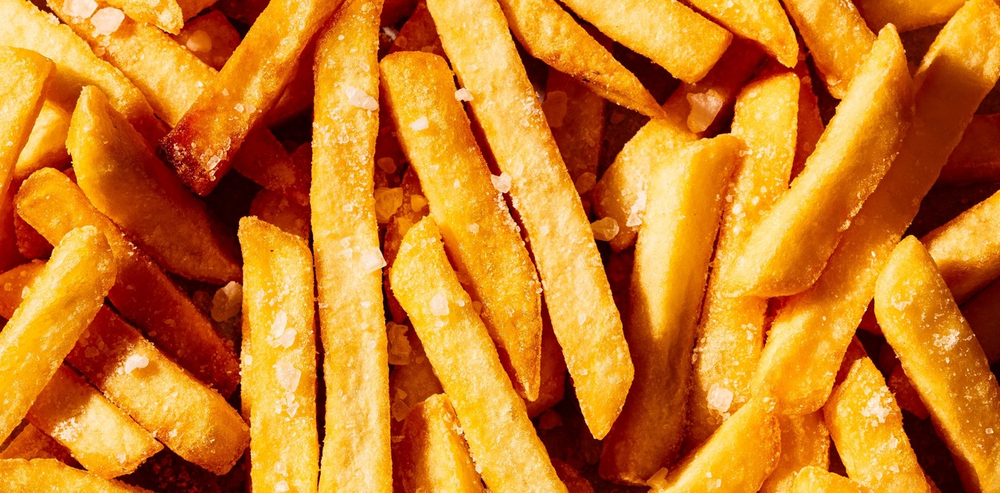

Papas Fritas Caseras

Las papas fritas caseras son uno de los acompañamientos más populares del mundo. Crujientes por fuera y suaves por dentro, son perfectas para acompañar hamburguesas, pollo o cualquier comida rápida.

Las papas fritas caseras son uno de los acompañamientos más populares del mundo. Crujientes por fuera y suaves por dentro, son perfectas para acompañar hamburguesas, pollo o cualquier comida rápida.